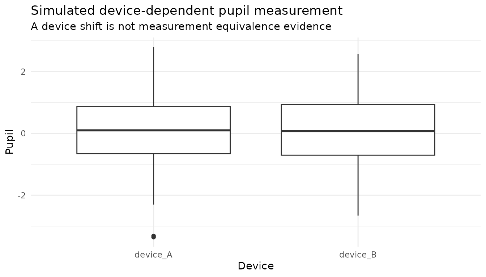
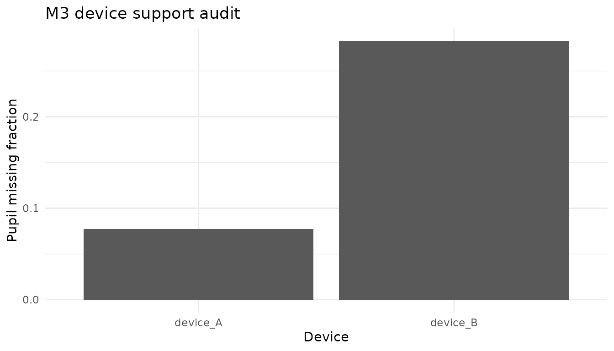
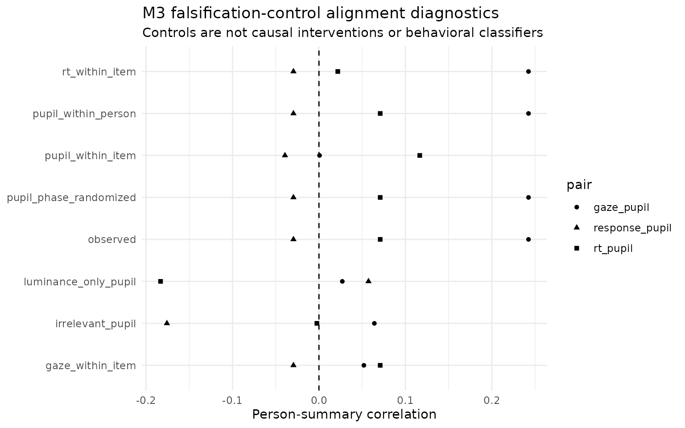

M3 device transport, falsification controls, and sensor value
Source:vignettes/m3-device-transport-sensor-value-0-10.Rmd
m3-device-transport-sensor-value-0-10.RmdMore sensors can create more failure modes
Pupil measurements can vary with device, sampling rate, gaze geometry, missingness and preprocessing. A four-channel model therefore needs falsification and transport diagnostics in addition to a richer likelihood. M3 exposes those concerns without asserting that a device label itself explains measurement differences.
Device-dependent stress
sim <- simulate_multimodal_m3(
n_person = 80,
n_item = 10,
pupil_missingness = "device",
seed = 20260815
)
audit <- audit_multimodal_m3_identifiability(sim)
audit$device
#> device n pupil_missing pupil_mean
#> device_A device_A 400 0.0775 0.10029058
#> device_B device_B 400 0.2825 0.07845766
plot(sim, type = "device")
#> Warning: Removed 144 rows containing non-finite outside the scale range
#> (`stat_boxplot()`).
plot(audit, type = "device")
These outputs identify device-specific shifts or availability patterns in the simulation. They do not establish measurement invariance. Empirical device transport requires repeated-device or appropriately linked data, explicit equivalence/invariance analysis and validation of the underlying pupil units and preprocessing semantics.
Falsification controls
neg <- multimodal_m3_negative_controls(sim, seed = 20260816)
neg$provenance
#> control
#> 1 gaze_within_item
#> 2 rt_within_item
#> 3 pupil_within_item
#> 4 pupil_within_person
#> 5 pupil_phase_randomized
#> 6 luminance_only_pupil
#> 7 irrelevant_pupil
#> purpose
#> 1 break gaze-person alignment within item
#> 2 break RT-person alignment within item
#> 3 break pupil-person alignment within item
#> 4 break pupil-item alignment within person
#> 5 destroy within-person ordered pupil-series phase structure while retaining its spectrum approximately
#> 6 test measurement artefact masquerading as pupil value
#> 7 test irrelevant channel false-positive value
#> interpretation
#> 1 falsification diagnostic only; not causal and not a behavioral classifier
#> 2 falsification diagnostic only; not causal and not a behavioral classifier
#> 3 falsification diagnostic only; not causal and not a behavioral classifier
#> 4 falsification diagnostic only; not causal and not a behavioral classifier
#> 5 falsification diagnostic only; not causal and not a behavioral classifier
#> 6 falsification diagnostic only; not causal and not a behavioral classifier
#> 7 falsification diagnostic only; not causal and not a behavioral classifierM3 includes pupil permutations within item and within person, phase randomization, a luminance-only pseudo-pupil, and an irrelevant synthetic pupil channel. These deliberately break different aspects of person/item alignment. They are tests of whether the analysis pipeline is too willing to manufacture process value; they are not causal interventions and not participant-behavior or misconduct detectors.
plot(neg, type = "pupil_alignment")
Sensor value is conditional
After an ablation lattice has been fitted,
multimodal_m3_process_information() reports the
response-target pupil gain per usable pupil observation and per
analyst-supplied relative sensor cost. This can support design
discussions about whether a pupil channel is worth collecting under a
specific model and target.
ab <- multimodal_m3_ablation(sim, chains = 4, parallel_chains = 4)
info <- multimodal_m3_process_information(ab, pupil_cost = 1.5)
info$sensor_value
plot(info, type = "sensor_value")The calculation is intentionally labeled a sensor value-of-information screen, not an economic cost-effectiveness analysis. It does not account automatically for equipment depreciation, staff time, participant burden, calibration failures, or the value of non-response outcomes.
Channel conflict
The same information object places response ELPD beside convergence diagnostics. This makes a useful failure mode visible: a channel can look incrementally predictive while substantially worsening computational stability, or can sharpen latent estimates without improving held-out response prediction. M3 keeps those dimensions separate so that a single improvement cannot hide a meaningful trade-off.